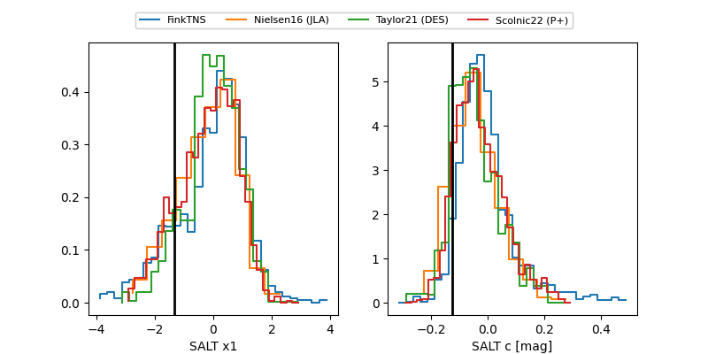

FINK: ZTF25abogyxn
Lasair: ZTF25abogyxn
ALeRCE: ZTF25abogyxn
ZTF25abogyxn (ztf,fink)
equatorial (ra, dec) = (75.2171,-8.68169)
galactic (l, b) = (208.0504,-28.49019)

last ztfg=20.23, ztfr=20.36
1 ztfg, 3 ztfr detections